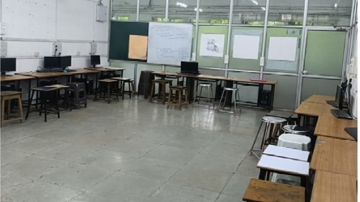
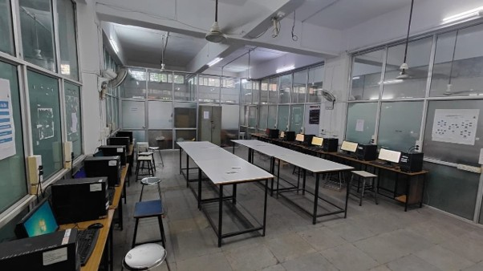
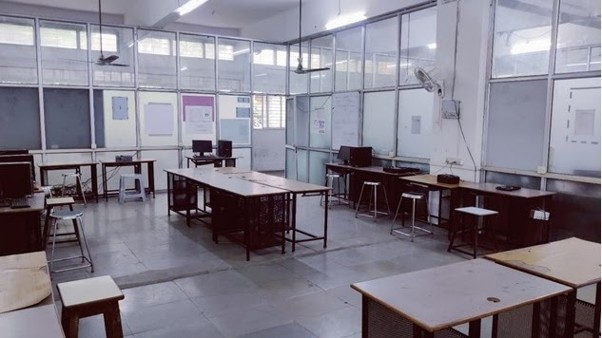
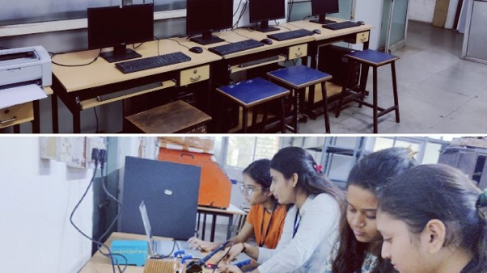
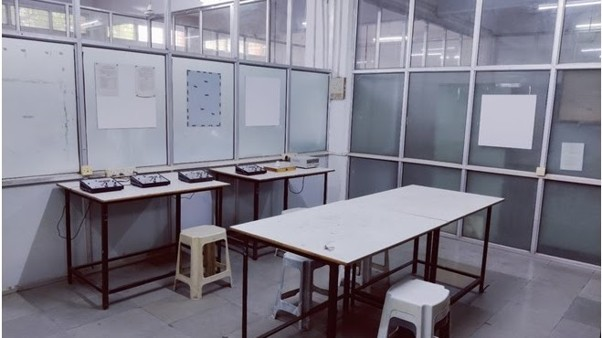
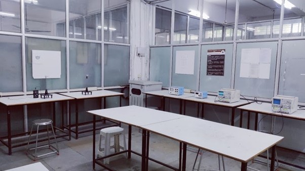
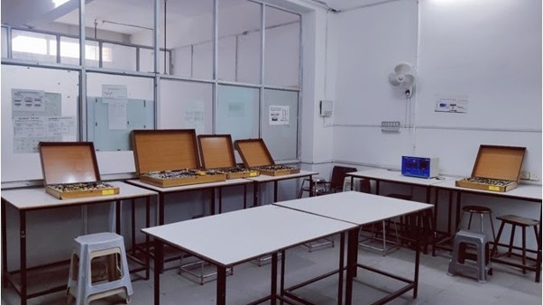

This computer lab helps students develop programming skills in various languages such as C. Students design and test software applications, practice database management, networking, cybersecurity, ethical hacking and collaborative projects.
Basic of Computer & Information Technology, Programming in C, Circuit Design Tools, Software Practices, VLSI
12 Computers, Windows 7 (64 Bit), 2 GB RAM, 500 GB Hard Disk, Intel Core i3 Processor
30 Students

This laboratory provides practical experience in PCB designing, soldering, testing and troubleshooting. Students develop real electronic projects and improve practical industry skills.
Electronics Workshop, Project
Scientific TL402 Test Lab, Digital Storage Oscilloscope, Triple Power Supply, Digital IC Tester, PCB Shearing Machine, Hot Air Gun, Digital Multimeter, 4 Computers (Core i5)
30 Students

This laboratory helps students understand digital electronics, microprocessor programming, microcontroller applications, embedded systems and VLSI programming with practical implementation.
Microprocessor & Assembly Language Programming, Digital Logic Design, Microcontroller, VLSI, Embedded System
Digital Electronics Trainer, 8085 Microprocessor Kit, 8051 Microcontroller Kit, Development Boards, ADC, DAC, Ring Counter, Shift Counter, 7 Computers (Core i3)
30 Students

This computer lab helps students develop programming skills in various languages such as C. Students learn software development, networking, database management, cybersecurity and real-time application development through practical sessions.
Basic of Computer & Information Technology, Programming in C, Circuit Design Tools, Software Practices, VLSI
12 Computers, Windows 7 (64 Bit), 2 GB RAM, 500 GB Hard Disk, Intel Core i3 Processor
30 Students

This laboratory helps students understand measuring instruments, transducers, industrial electronics and power electronic devices. Students learn testing, troubleshooting and measurement techniques used in industries.
Electronics Instruments and Measurement, Industrial Electronics, Consumer Electronics
Scientific TL402 Test Lab, Triple Power Supply, Wheatstone Bridge Kit, Kelvin Bridge Kit, Shearing Bridge Kit, Maxwell Bridge Kit, Transducer Kit, LCR Meter, Variac, Digital Frequency Counter
20 Students

This laboratory helps students understand analog and digital communication systems, antenna systems, optical communication, microwave communication, mobile communication and computer networking.
Principles of Electronic Communication, Antenna & Wave Propagation, Optical Communication, Microwave & Radar Engineering, Mobile Communication, Computer Network
Scientific TL402 Test Lab, GSM Trainer, CDMA Trainer, Mobile Phone Trainer, Digital Communication Trainer, Antenna Trainer, Communication System Trainer, Fiber Optics Trainer, Computer Network Trainer
20 Students

This laboratory helps students study semiconductor devices, electronic circuits, operational amplifiers, oscillators, timers and network theorems. It provides practical knowledge of analog electronics and electronic components.
Analog Electronics, Electronic Circuits & Applications, Electronic Components & Practice, Electronic Networks
Scientific TL402 Test Lab, 30 MHz CRO, Dual DC Regulated Power Supply, RF Signal Generator, Digital Storage Oscilloscope, Electronics Kit, Operational Amplifier Trainer, Linear IC Trainer, Network Theorem Kits, High Pass & Low Pass Filter Kits
20 Students